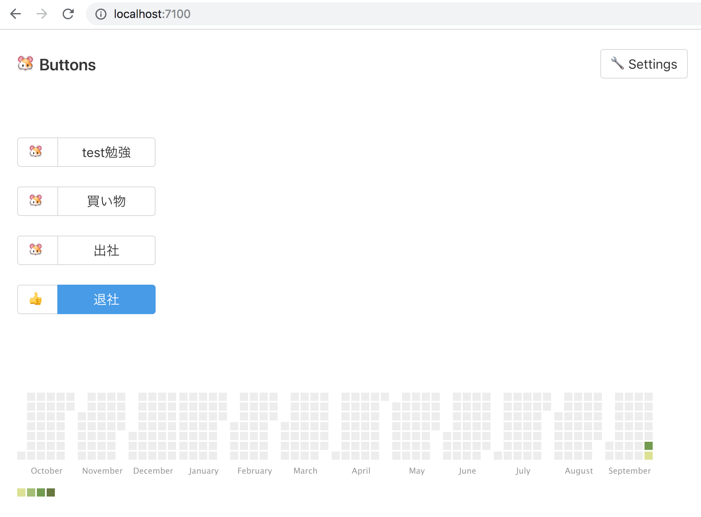

Week 39 - 2018
The weeknote for 9/24 - 9/30.
OSS
denoland/deno
- The benchmark page evolved very much thanks to @kevinkassimo. It's fun to see the charts and their progress! 😃
- Deno became multithreaded! https://github.com/denoland/deno/pull/782
- I don't know what it means though.
MyProject
kt3k/buttons
https://github.com/kt3k/buttons
buttons is a web service which shows the buttons of daily tasks and the user push them everyday when they finished the task. The records of pushed buttons are shown as a calendar heatmap (like gihtub's contribution heatmap).
- Much progress in this week.
- The users can finish onboarding process.
- The users can check / uncheck the buttons.
- The users can see their own calendars.
- All of domain methods, and most of APIs are unit tested very well! 😃
- Probably finish it when I added other user's profile page and some banner ads.
- Had some findings when creating these features:
- No need of Fontawesome anymore in prototyping phase. Just native emojis are enough for prototyping purpose.
- date-fns seems really good. It uses native Date object as the presentation of date. That's natural. And date-fns doesn't modify date object, but treat them as immutable thing. That's really good thing and must prevents lots of bugs.
The screenshot of current top page.

Events
netlifytokyo
https://netlify-meetup-tokyo.connpass.com/event/100705/
- The first time to come to netlify meetup in Tokyo. Though Netlify rejected my job application last month, I still love the product and the idea of JAMstack.
Life
Macbook Pro
- Bought a new macbook pro (13-inch, no touchbar model, 256GB SSD). Around 170K yen.
- The previous one has become totally unusable because the display blacks out whenever I open it with the right angle. It works normally when the display opens 80 degrees, but once the angle between main body and display reaches near 90 degrees, the display blacks out. I've never experienced this kind of malfunction before. Maybe this is because I dropped the laptop hard a few month ago, or maybe because of the dust entered through the slits around key tops. Speaking of keyboard, the previous macbook was the worst experience of keyboard in my life. I didn't hate the very short key strokes of the new macbook pro. I got used to it shortly after I started using it. However shortly after I got used to its short strokes, the left arrow key started not responding, then right arrow, then 1 key, etc. I bought an air duster for the first time in my life and I had to periodically blow it. That was really irritating 😕 I've already bought a keyboard cover for new one. I hope this prevents the keyboard problems like the previus one.